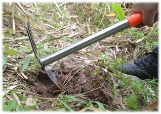

טיפים לגינון
עונת האביב היא הזדמנות נהדרת להתחיל בתכנון הגינה
ולהיות מוכנים לשתילה עם ראשית התחממות מזג האוויר.
כיצד ניגשים לעבודה
ראשית, עלינו לבחור את הצמחים אותם אנו רוצים לגדל לפי העדפותינו האישיות ולפי הגינה העומדת לרשותנו (אל תדאגו, גם גידול בעציץ או באדניות זה בסדר).
אחרי שבחרנו את הצמחים ואת מיקום השתילה, יש מספר נתונים שעלינו לדעת:
- עלינו להכיר את הצמח אותו אנחנו בוחרים לגדל ולדעת את אופי הצמיחה שלו (שיח, מטפס, עשבוני ועוד). ולמה? ברגע שנעריך את גודלו של הצמח, נוכל לקבוע את מרחק השתילה שלו מהצמחים האחרים.
- מידת החשיפה לאור השמש שהצמח יכול לעמוד בה- חשיפה מלאה, חלקית או צל מלא.
- להכיר את דרישות המים של הצמח. ישנם צמחים שיותר צנועים בדרישות המים שלהם וישנם צמחים שפחות. תוכלו למצוא נתונים יותר מפורטים לצמחים הרלוונטיים לכם במשתלה הקרובה או בספרי גינון.
אז אחרי שהחלטנו אילו צמחים נגדל ולמדנו עליהם דבר או שניים, אפשר להתחיל במלאכה!
זהו השלב הבסיסי והחשוב ביותר –הכנת הקרקע. תשתית טובה היא תנאי להצלחה בגידול הצמחים שלנו.
אז איך עושים את זה? במספר שלבים פשוטים:
- עישוב והרחקת אבנים מהשטח.
- אוורור של הקרקע על-ידי הפיכתה בעזרת קלשון.
הטיפ שלנו
לאחר אוורור הקרקע, מומלץ להטמין כ-15 ליטר של קומפוסט (באיכות טובה!) ולאחר מכן להשקות את הקרקע עד לרוויה ולבחון את ניקוז המים בקרקע. במידה והמים עומדים או מתנקזים לאט מומלץ לפנות למומחה.
לאחר ההשקיה, יש להמתין מספר ימים ולאחר מכן שותלים את הזרעים. לא לשכוח! עליכם לשמור על האדמה לחה ולהוסיף מים כאשר הלחות יורדת.
הטיפ שלנו
על טמפרטורת המים להיות בטמפ' החדר (מים קרים מידי או חמים מידי עלולים להרוס את שורש הצמח שלכם).